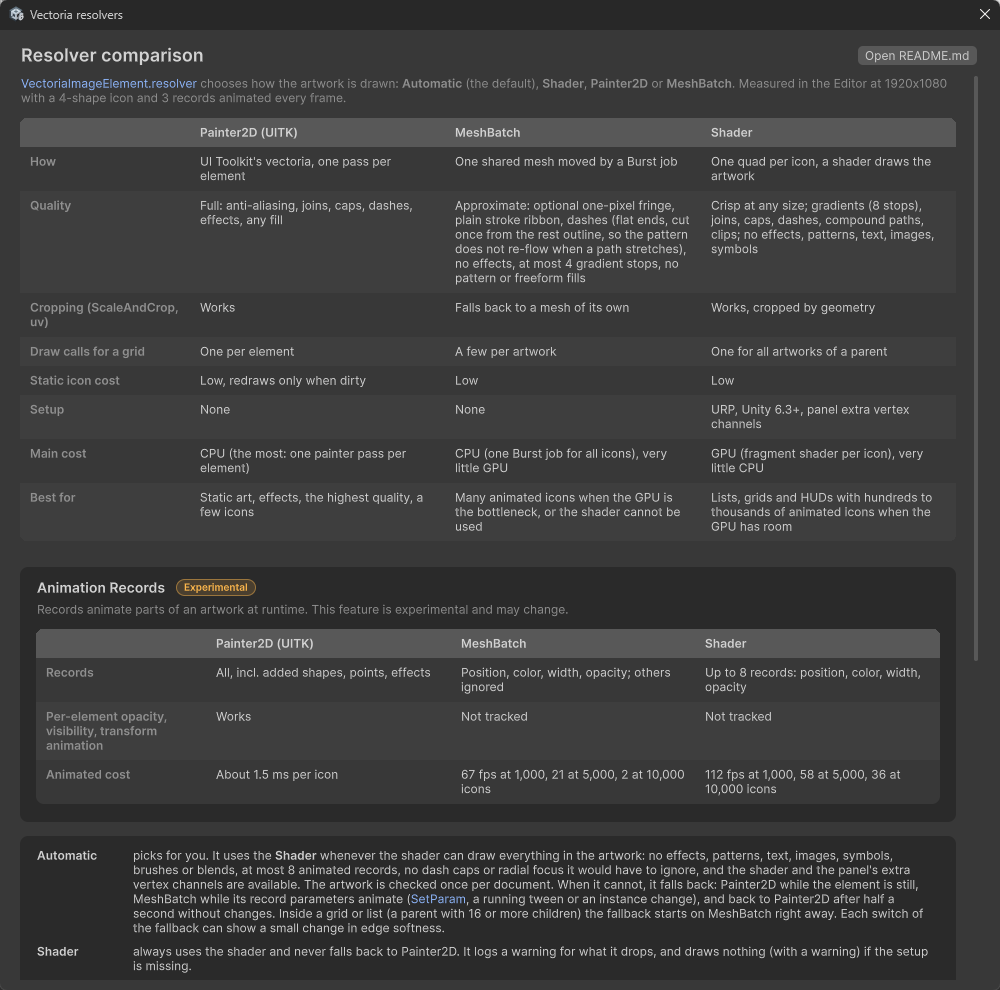

Choosing a Resolver
Automatic, Shader, MeshBatch and Painter2D compared.
A resolver decides how a .vpaint is drawn at runtime. Leave it on the default unless you have a reason to change it. In UI Toolkit the default is Automatic, and in uGUI it is Shader. Both come from Settings, and you can override them on a single element.

The four resolvers
| Shader | MeshBatch | Painter2D (UI Toolkit only) | |
|---|---|---|---|
| How | One quad per icon, and a shader draws the artwork | One shared mesh moved by a Burst job | UI Toolkit's vector painter, one pass per element |
| Quality | Crisp at any size. Gradients (8 stops), joins, caps, dashes, compound paths, clips. No effects, patterns, text, images or symbols | Approximate. Optional one-pixel fringe, plain strokes, no effects, at most 4 gradient stops, no pattern or freeform fills | Full: anti-aliasing, joins, caps, dashes, effects, any fill |
| Setup | URP and panel channels (UI Toolkit), Canvas channels (uGUI) | None | None |
| Main cost | GPU (a fragment shader per icon), very little CPU | CPU (one Burst job for all icons), very little GPU | CPU, the most: one painter pass per element |
| Draw calls for a grid | One for all artworks of a parent | A few per artwork | One per element |
| Cropping (Scale And Crop, uv) | Works, cropped by geometry | Falls back to a mesh of its own | Works |
| Best for | Lists, grids and HUDs with hundreds to thousands of icons | Many animated icons when the GPU is the bottleneck, or the shader cannot be used | Static art, effects, the highest quality, a few icons |
Everything in the table is also in a comparison window. Press the ? button beside the Resolver field in UI Builder, or Open Resolver Comparison in Settings.

Automatic
Automatic picks for you. It uses the Shader whenever the shader can draw the whole artwork and the setup is in place. That means:
- the artwork has no effects, patterns, text, images, symbols, brushes or blends;
- at most 8 records animate, and there is no dash cap or radial focus the shader would have to ignore;
- URP and the panel's extra vertex channels are available.
The artwork is checked once per document. When the shader cannot draw it, Automatic falls back:
- Painter2D while the element is still.
- MeshBatch while its record parameters animate (
SetParam, a running tween, or an instance change), and back to Painter2D after half a second without changes. - Inside a grid or list (a parent with 16 or more children) the fallback starts on MeshBatch right away.
Each switch can show a small change in edge softness. If that bothers you, set the resolver by hand. Automatic exists in UI Toolkit only. In uGUI the default is Shader.
Which one to pick
- Default: leave it alone.
- Effects, patterns, text or images in the artwork: Painter2D. Automatic chooses it for you.
- The best possible quality for a few icons: Painter2D.
- A grid or list of many animated icons where Automatic does not choose the shader, or where the GPU is the limit: MeshBatch.
- uGUI: Shader, or MeshBatch when you cannot set the Canvas channels.
CPU or GPU: which budget do you have?
The resolvers spend different budgets, so none replaces the others. Painter2D and MeshBatch cost CPU. The Shader costs GPU.
Painter2D is not suitable for rendering many icons. It gives the highest quality, but the performance cost is very large: 50 animated icons can drop to about 15 fps. Use it for a few icons, and for large counts choose between the other two.
- GPU has headroom and the CPU is busy: Shader.
- The GPU is the bottleneck (mobile, fill-rate-bound or heavy scenes), or the artwork is not shader-drawable: MeshBatch. It scales much further than Painter2D (41 fps at 5,000 animated icons in the benchmark below) and costs very little GPU.
Automatic always prefers the Shader when it can draw the artwork. It does not look at CPU or GPU load.
Performance Benchmark
Measured in the Editor at 1920x1080 on one desktop machine, with a 4-shape icon and 3 records animated every frame. The Shader is ahead here. On a phone GPU the result can be the opposite, so measure on your target device.
| Animated icons | 1,000 | 5,000 | 10,000 |
|---|---|---|---|
| Shader | 112 fps | 58 fps | 36 fps |
| MeshBatch | 102 fps | 41 fps | 23 fps |
| MeshBatch (Anti-alias) | 78 fps | 24 fps | 8 fps |
| Painter2D | About 1.5 ms per icon. 50 icons already run at about 16 fps. | ||
The Shader row comes from a separate run from the MeshBatch rows, so compare them roughly.
MeshBatch anti-aliasing. Painter2D always smooths its edges, and the shader computes coverage per pixel. MeshBatch does it with a one-pixel fringe: a second ring of transparent vertices around every edge. It is an option on each element (anti-alias, or antiAlias in code), off by default, and it costs about twice the vertices. For very large numbers of tiny icons, leave it off.
Complexity matters. MeshBatch and Painter2D are mesh based: they turn the vector into triangles. The more complex the artwork (more shapes, points and curves), the more triangles there are, and the more work it takes to build and draw them for every icon. The Shader does not build triangles. Each icon is one quad, so its cost follows the pixels it covers and its outline segments, not a triangle count. Complex artwork therefore hurts the mesh-based resolvers most.
For static icons all three resolvers are cheap, and Painter2D redraws only when something changes. Each Painter2D element costs a draw call and a gradient slot, and about 2,000 gradient icons overflow Unity's 4,096-slot table.
Examples
- A HUD with 200 icons: keep the default. The shader draws them all, in a few draw calls.
- A big hero illustration with a drop shadow: in UI Toolkit, Painter2D (Automatic picks it). In uGUI no resolver draws effects, so set that artboard's Asset Type to Textured Sprite in the importer and use a normal Image.
- A mobile game with 5,000 animated icons: Automatic would pick the Shader. Try that first, and if the GPU is the limit, switch those elements to MeshBatch by hand. The numbers above are from a desktop, so measure on the device. If you can, animate fewer icons.
Which path is drawing?
In UI Toolkit, element.usesShader, usesMeshBatchPath and usesSharedBatch tell you. In uGUI, image.effectiveResolver is the resolver in effect and image.isRasterDrawn tells whether a raster tile is drawn.